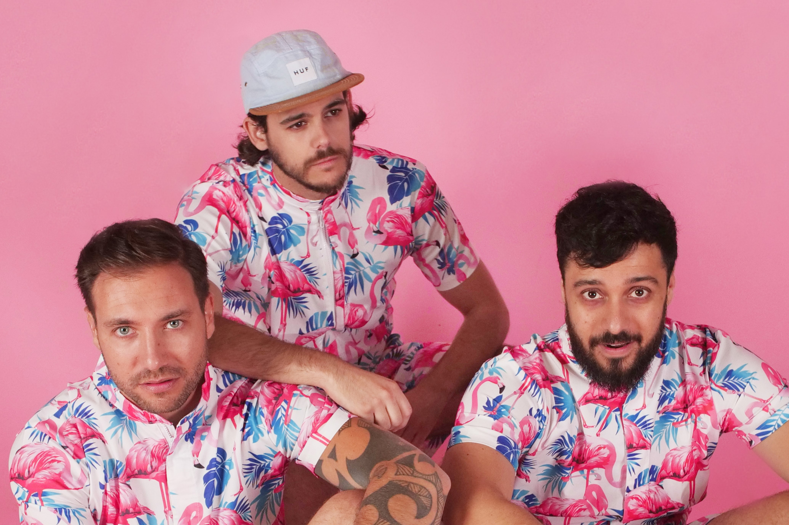

Interview du groupe Jelly jelly fire
Rencontre avec un trio de musiciens lyonnais.

Entrés dans le monde musical dès l’enfance, les membres du groupe Jelly jelly fire s’affirment de plus en plus sur la scène lyonnaise. Minimalisme joyeux et mélodies singulières, telle serait la définition de leurs clips, dont un a séduit plus de 6 700 internautes, les voilà déjà en préparation d’un nouvel ep.
-INTERVIEW –Hey Jelly Jelly Fire ! C’est original comme nom. Comment avez-vous eu l’idée ?
Salut ! Alors pour le nom du groupe c’est simple, on voulait quelque chose d’assez fun, de dynamique et qui « sonne » ! Non, pas d’anagramme ou de lien mystique caché derrière tout ça !
Racontez-moi un peu le début de votre groupe.
Le groupe est né suite à la décision d’arrêter notre ancien projet « Aurelia Sun » dans lequel on se sentait un peu trop bridé artistiquement parlant. Dans Jelly Jelly Fire on ne se fixe plus de barrières en termes de musicalité ou d’esthétique, on se laisse porter par nos influences et nos envies.
Quelles sont vos influences musicales ?
En termes d’influence ça bouge pas mal d’une semaine à une autre, on se retrouve assez bien tous les trois dans Hyphen Hyphen, The Faim et Imagine Dragons.
D’ailleurs, comment décririez-vous votre univers ?
On fait de la « Jelly Pop » ! On voit ça comme un mélange de sonorités catchy Pop-Rock-Electro. On aime aussi s’essayer à de nouveaux univers musicaux comme la synthpop, la dance, la techno etc.. et ne pas se contraindre à un style bien précis.
Franky, Matt, Buss, vous avez commencé quand vous étiez enfant à faire de la musique ou plus tard ?
Matt : Alors j’ai commencé à 15 ans après avoir écouté Wonderwall sur une compil de mon père et on a décidé de monter un groupe avec mes potes de lycée ! C’était assez catastrophique au début mais on était vraiment content de pouvoir jouer ensemble !
Buss : ahah assez catastrophique de mon côté aussi ! Mon oncle déménageait et avait laissé pas mal d’affaires chez nous, dont une vieille guitare qui m’intriguait pas mal, du coup j’ai commencé à essayer tout seul ou en autodidacte.
Francky : De mon coté, jai commencé par des cours de piano à 8 ans puis j’ai enchainé à la batterie à 15ans !
J’ai cru comprendre qu’un nouvel ep allait arriver ! Vous pouvez m’en dire plus ? Une petite exclu ?
Le prochain Ep va être un changement majeur ! On a décidé d’arrêter de se cacher derrière des textes en anglais un peu bancales et d’enfin oser chanter en français. Oui, maintenant on se sent prêt à parler ouvertement de nos émotions, sans filtre !
Quels thèmes seront abordés plus précisément ?
Les textes du prochain Ep tournent tous autour de l’amour, de la séduction et de tout ce qui gravite autour, parce que c’est ce qu’on connaît le mieux et c’est ce qui nous fait vibrer !
Qu’est-ce qui vous a motivé à le faire ?
Depuis qu’on fait de la musique tous les trois on n’a jamais été rassasié de composer, de produire, de jouer ensemble… ! On a toujours envie d’explorer de nouvelles choses. Il est même très probable que dès que l’ep sera sorti on aura déjà envie de recommencer à composer !
Le mot de la fin ?
Matt : Merci Charlotte de nous avoir accordé du temps ! Buss : On a hâte de pouvoir vous faire écouter ce nouvel EP !
Franky : Bisous !
Un groupe prometteur avec un indéniable talent. « On se sent prêt à parler ouvertement de nos émotions, sans filtre. » probablement la meilleure façon, judicieuse et intelligente, de marquer les esprits cette année. Cela nous promet un nouvel ep bien exceptionnel !
On peut les retrouver sur Facebook ou sur instagram : Jellyjellyfire